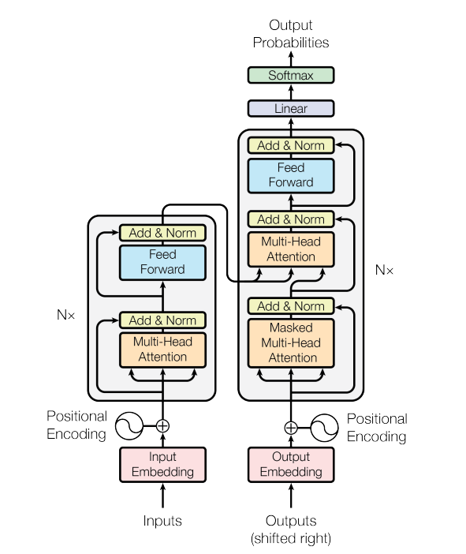
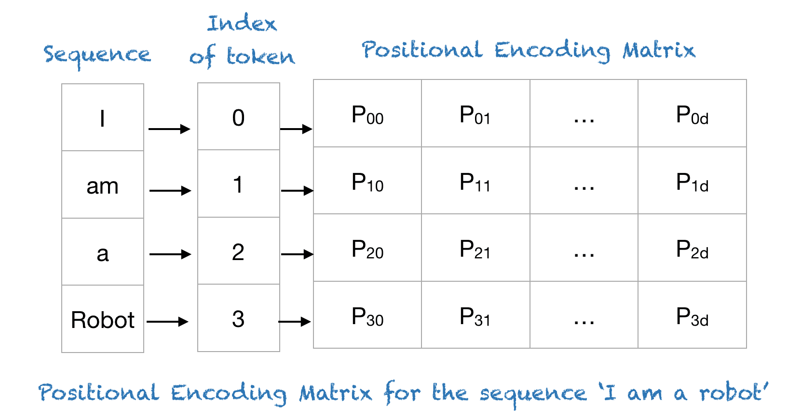
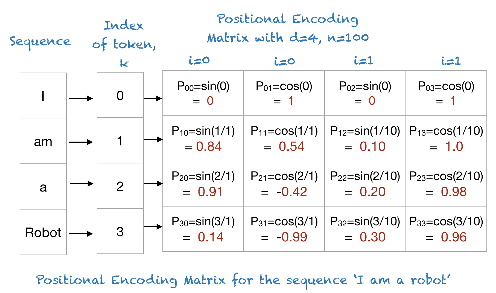
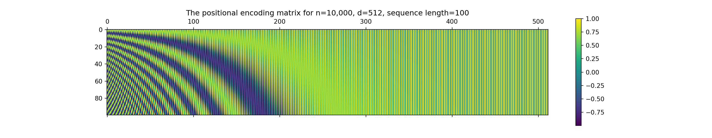
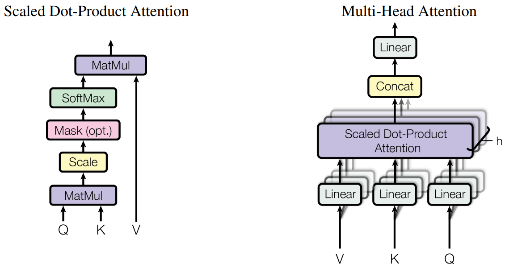

3 Transformers for sentiment analysis
import torch
import torch.nn as nn
import torch.nn.functional as F
from torch.utils.data import DataLoader, TensorDataset
import torch.optim as optim
import numpy as np3.1 Download the dataset
import tensorflow as tf
imdb = tf.keras.datasets.imdb
vocab_size = 20000 # Only consider the top 20k words
(x_train, y_train), (x_test, y_test) = imdb.load_data(num_words=vocab_size)
print("Number of training samples:", len(x_train))## Number of training samples: 25000## Number of test samples: 25000## [list([1, 14, 22, 16, 43, 530, 973, 1622, 1385, 65, 458, 4468, 66, 3941, 4, 173, 36, 256, 5, 25, 100, 43, 838, 112, 50, 670, 2, 9, 35, 480, 284, 5, 150, 4, 172, 112, 167, 2, 336, 385, 39, 4, 172, 4536, 1111, 17, 546, 38, 13, 447, 4, 192, 50, 16, 6, 147, 2025, 19, 14, 22, 4, 1920, 4613, 469, 4, 22, 71, 87, 12, 16, 43, 530, 38, 76, 15, 13, 1247, 4, 22, 17, 515, 17, 12, 16, 626, 18, 19193, 5, 62, 386, 12, 8, 316, 8, 106, 5, 4, 2223, 5244, 16, 480, 66, 3785, 33, 4, 130, 12, 16, 38, 619, 5, 25, 124, 51, 36, 135, 48, 25, 1415, 33, 6, 22, 12, 215, 28, 77, 52, 5, 14, 407, 16, 82, 10311, 8, 4, 107, 117, 5952, 15, 256, 4, 2, 7, 3766, 5, 723, 36, 71, 43, 530, 476, 26, 400, 317, 46, 7, 4, 12118, 1029, 13, 104, 88, 4, 381, 15, 297, 98, 32, 2071, 56, 26, 141, 6, 194, 7486, 18, 4, 226, 22, 21, 134, 476, 26, 480, 5, 144, 30, 5535, 18, 51, 36, 28, 224, 92, 25, 104, 4, 226, 65, 16, 38, 1334, 88, 12, 16, 283, 5, 16, 4472, 113, 103, 32, 15, 16, 5345, 19, 178, 32])
## list([1, 194, 1153, 194, 8255, 78, 228, 5, 6, 1463, 4369, 5012, 134, 26, 4, 715, 8, 118, 1634, 14, 394, 20, 13, 119, 954, 189, 102, 5, 207, 110, 3103, 21, 14, 69, 188, 8, 30, 23, 7, 4, 249, 126, 93, 4, 114, 9, 2300, 1523, 5, 647, 4, 116, 9, 35, 8163, 4, 229, 9, 340, 1322, 4, 118, 9, 4, 130, 4901, 19, 4, 1002, 5, 89, 29, 952, 46, 37, 4, 455, 9, 45, 43, 38, 1543, 1905, 398, 4, 1649, 26, 6853, 5, 163, 11, 3215, 10156, 4, 1153, 9, 194, 775, 7, 8255, 11596, 349, 2637, 148, 605, 15358, 8003, 15, 123, 125, 68, 2, 6853, 15, 349, 165, 4362, 98, 5, 4, 228, 9, 43, 2, 1157, 15, 299, 120, 5, 120, 174, 11, 220, 175, 136, 50, 9, 4373, 228, 8255, 5, 2, 656, 245, 2350, 5, 4, 9837, 131, 152, 491, 18, 2, 32, 7464, 1212, 14, 9, 6, 371, 78, 22, 625, 64, 1382, 9, 8, 168, 145, 23, 4, 1690, 15, 16, 4, 1355, 5, 28, 6, 52, 154, 462, 33, 89, 78, 285, 16, 145, 95])
## list([1, 14, 47, 8, 30, 31, 7, 4, 249, 108, 7, 4, 5974, 54, 61, 369, 13, 71, 149, 14, 22, 112, 4, 2401, 311, 12, 16, 3711, 33, 75, 43, 1829, 296, 4, 86, 320, 35, 534, 19, 263, 4821, 1301, 4, 1873, 33, 89, 78, 12, 66, 16, 4, 360, 7, 4, 58, 316, 334, 11, 4, 1716, 43, 645, 662, 8, 257, 85, 1200, 42, 1228, 2578, 83, 68, 3912, 15, 36, 165, 1539, 278, 36, 69, 2, 780, 8, 106, 14, 6905, 1338, 18, 6, 22, 12, 215, 28, 610, 40, 6, 87, 326, 23, 2300, 21, 23, 22, 12, 272, 40, 57, 31, 11, 4, 22, 47, 6, 2307, 51, 9, 170, 23, 595, 116, 595, 1352, 13, 191, 79, 638, 89, 2, 14, 9, 8, 106, 607, 624, 35, 534, 6, 227, 7, 129, 113])
## list([1, 4, 18609, 16085, 33, 2804, 4, 2040, 432, 111, 153, 103, 4, 1494, 13, 70, 131, 67, 11, 61, 15305, 744, 35, 3715, 761, 61, 5766, 452, 9214, 4, 985, 7, 2, 59, 166, 4, 105, 216, 1239, 41, 1797, 9, 15, 7, 35, 744, 2413, 31, 8, 4, 687, 23, 4, 2, 7339, 6, 3693, 42, 38, 39, 121, 59, 456, 10, 10, 7, 265, 12, 575, 111, 153, 159, 59, 16, 1447, 21, 25, 586, 482, 39, 4, 96, 59, 716, 12, 4, 172, 65, 9, 579, 11, 6004, 4, 1615, 5, 2, 7, 5168, 17, 13, 7064, 12, 19, 6, 464, 31, 314, 11, 2, 6, 719, 605, 11, 8, 202, 27, 310, 4, 3772, 3501, 8, 2722, 58, 10, 10, 537, 2116, 180, 40, 14, 413, 173, 7, 263, 112, 37, 152, 377, 4, 537, 263, 846, 579, 178, 54, 75, 71, 476, 36, 413, 263, 2504, 182, 5, 17, 75, 2306, 922, 36, 279, 131, 2895, 17, 2867, 42, 17, 35, 921, 18435, 192, 5, 1219, 3890, 19, 2, 217, 4122, 1710, 537, 2, 1236, 5, 736, 10, 10, 61, 403, 9, 2, 40, 61, 4494, 5, 27, 4494, 159, 90, 263, 2311, 4319, 309, 8, 178, 5, 82, 4319, 4, 65, 15, 9225, 145, 143, 5122, 12, 7039, 537, 746, 537, 537, 15, 7979, 4, 18665, 594, 7, 5168, 94, 9096, 3987, 15242, 11, 2, 4, 538, 7, 1795, 246, 2, 9, 10161, 11, 635, 14, 9, 51, 408, 12, 94, 318, 1382, 12, 47, 6, 2683, 936, 5, 6307, 10197, 19, 49, 7, 4, 1885, 13699, 1118, 25, 80, 126, 842, 10, 10, 2, 18223, 4726, 27, 4494, 11, 1550, 3633, 159, 27, 341, 29, 2733, 19, 4185, 173, 7, 90, 16376, 8, 30, 11, 4, 1784, 86, 1117, 8, 3261, 46, 11, 2, 21, 29, 9, 2841, 23, 4, 1010, 2, 793, 6, 13699, 1386, 1830, 10, 10, 246, 50, 9, 6, 2750, 1944, 746, 90, 29, 16376, 8, 124, 4, 882, 4, 882, 496, 27, 2, 2213, 537, 121, 127, 1219, 130, 5, 29, 494, 8, 124, 4, 882, 496, 4, 341, 7, 27, 846, 10, 10, 29, 9, 1906, 8, 97, 6, 236, 11120, 1311, 8, 4, 2, 7, 31, 7, 2, 91, 2, 3987, 70, 4, 882, 30, 579, 42, 9, 12, 32, 11, 537, 10, 10, 11, 14, 65, 44, 537, 75, 11876, 1775, 3353, 12716, 1846, 4, 11286, 7, 154, 5, 4, 518, 53, 13243, 11286, 7, 3211, 882, 11, 399, 38, 75, 257, 3807, 19, 18223, 17, 29, 456, 4, 65, 7, 27, 205, 113, 10, 10, 2, 4, 2, 10359, 9, 242, 4, 91, 1202, 11377, 5, 2070, 307, 22, 7, 5168, 126, 93, 40, 18223, 13, 188, 1076, 3222, 19, 4, 13465, 7, 2348, 537, 23, 53, 537, 21, 82, 40, 18223, 13, 2, 14, 280, 13, 219, 4, 2, 431, 758, 859, 4, 953, 1052, 12283, 7, 5991, 5, 94, 40, 25, 238, 60, 2, 4, 15812, 804, 2, 7, 4, 9941, 132, 8, 67, 6, 22, 15, 9, 283, 8, 5168, 14, 31, 9, 242, 955, 48, 25, 279, 2, 23, 12, 1685, 195, 25, 238, 60, 796, 13713, 4, 671, 7, 2804, 5, 4, 559, 154, 888, 7, 726, 50, 26, 49, 7008, 15, 566, 30, 579, 21, 64, 2574])
## list([1, 249, 1323, 7, 61, 113, 10, 10, 13, 1637, 14, 20, 56, 33, 2401, 18, 457, 88, 13, 2626, 1400, 45, 3171, 13, 70, 79, 49, 706, 919, 13, 16, 355, 340, 355, 1696, 96, 143, 4, 22, 32, 289, 7, 61, 369, 71, 2359, 5, 13, 16, 131, 2073, 249, 114, 249, 229, 249, 20, 13, 28, 126, 110, 13, 473, 8, 569, 61, 419, 56, 429, 6, 1513, 18, 35, 534, 95, 474, 570, 5, 25, 124, 138, 88, 12, 421, 1543, 52, 725, 6397, 61, 419, 11, 13, 1571, 15, 1543, 20, 11, 4, 2, 5, 296, 12, 3524, 5, 15, 421, 128, 74, 233, 334, 207, 126, 224, 12, 562, 298, 2167, 1272, 7, 2601, 5, 516, 988, 43, 8, 79, 120, 15, 595, 13, 784, 25, 3171, 18, 165, 170, 143, 19, 14, 5, 7224, 6, 226, 251, 7, 61, 113])]## [1 0 0 1 0]# Retrieve the dictionary which maps words to indices.
word_to_integer = imdb.get_word_index()
list(word_to_integer.items())[0:5]## [('fawn', 34701), ('tsukino', 52006), ('nunnery', 52007), ('sonja', 16816), ('vani', 63951)]# Build a new dictionary which reverses the mapping, i.e. (index, word)
integer_to_word = dict([(value, key) for (key, value) in word_to_integer.items()])
list(integer_to_word.items())[0:5]## [(34701, 'fawn'), (52006, 'tsukino'), (52007, 'nunnery'), (16816, 'sonja'), (63951, 'vani')]# Print out a review
for n in range(5):
decoded_review = [integer_to_word.get(i - 3,'pad') for i in x_train[n]]
if y_train[n]==0:
print("Negative review: \n", end="")
else:
print("Positive review: \n", end="")
for word in decoded_review:
if word == 'pad':
continue
print(word, end=" ")
print("\n")## Positive review:
## this film was just brilliant casting location scenery story direction everyone's really suited the part they played and you could just imagine being there robert is an amazing actor and now the same being director father came from the same scottish island as myself so i loved the fact there was a real connection with this film the witty remarks throughout the film were great it was just brilliant so much that i bought the film as soon as it was released for retail and would recommend it to everyone to watch and the fly fishing was amazing really cried at the end it was so sad and you know what they say if you cry at a film it must have been good and this definitely was also congratulations to the two little boy's that played the of norman and paul they were just brilliant children are often left out of the praising list i think because the stars that play them all grown up are such a big profile for the whole film but these children are amazing and should be praised for what they have done don't you think the whole story was so lovely because it was true and was someone's life after all that was shared with us all
##
## Negative review:
## big hair big boobs bad music and a giant safety pin these are the words to best describe this terrible movie i love cheesy horror movies and i've seen hundreds but this had got to be on of the worst ever made the plot is paper thin and ridiculous the acting is an abomination the script is completely laughable the best is the end showdown with the cop and how he worked out who the killer is it's just so damn terribly written the clothes are sickening and funny in equal measures the hair is big lots of boobs bounce men wear those cut tee shirts that show off their sickening that men actually wore them and the music is just trash that plays over and over again in almost every scene there is trashy music boobs and taking away bodies and the gym still doesn't close for all joking aside this is a truly bad film whose only charm is to look back on the disaster that was the 80's and have a good old laugh at how bad everything was back then
##
## Negative review:
## this has to be one of the worst films of the 1990s when my friends i were watching this film being the target audience it was aimed at we just sat watched the first half an hour with our jaws touching the floor at how bad it really was the rest of the time everyone else in the theatre just started talking to each other leaving or generally crying into their popcorn that they actually paid money they had working to watch this feeble excuse for a film it must have looked like a great idea on paper but on film it looks like no one in the film has a clue what is going on crap acting crap costumes i can't get across how this is to watch save yourself an hour a bit of your life
##
## Positive review:
## the scots excel at storytelling the traditional sort many years after the event i can still see in my mind's eye an elderly lady my friend's mother retelling the battle of she makes the characters come alive her passion is that of an eye witness one to the events on the heath a mile or so from where she lives br br of course it happened many years before she was born but you wouldn't guess from the way she tells it the same story is told in bars the length and of scotland as i discussed it with a friend one night in a local cut in to give his version the discussion continued to closing time br br stories passed down like this become part of our being who doesn't remember the stories our parents told us when we were children they become our invisible world and as we grow older they maybe still serve as inspiration or as an emotional reservoir fact and fiction blend with role models warning stories magic and mystery br br my name is like my grandfather and his grandfather before him our protagonist introduces himself to us and also introduces the story that stretches back through generations it produces stories within stories stories that evoke the impenetrable wonder of scotland its rugged mountains shrouded in the stuff of legend yet is rooted in reality this is what gives it its special charm it has a rough beauty and authenticity tempered with some of the finest gaelic singing you will ever hear br br angus visits his grandfather in hospital shortly before his death he burns with frustration part of him yearns to be in the twenty first century to hang out in but he is raised on the western among a gaelic speaking community br br yet there is a deeper conflict within him he yearns to know the truth the truth behind his ancient stories where does fiction end and he wants to know the truth behind the death of his parents br br he is pulled to make a last fateful journey to the of one of most mountains can the truth be told or is it all in stories br br in this story about stories we revisit bloody battles poisoned lovers the folklore of old and the sometimes more treacherous folklore of accepted truth in doing so we each connect with angus as he lives the story of his own life br br the pinnacle is probably the most honest unpretentious and genuinely beautiful film of scotland ever made like angus i got slightly annoyed with the pretext of hanging stories on more stories but also like angus i this once i saw the picture ' forget the box office pastiche of braveheart and its like you might even the justly famous of the wicker man to see a film that is true to scotland this one is probably unique if you maybe on it deeply enough you might even re evaluate the power of storytelling and the age old question of whether there are some truths that cannot be told but only experienced
##
## Negative review:
## worst mistake of my life br br i picked this movie up at target for 5 because i figured hey it's sandler i can get some cheap laughs i was wrong completely wrong mid way through the film all three of my friends were asleep and i was still suffering worst plot worst script worst movie i have ever seen i wanted to hit my head up against a wall for an hour then i'd stop and you know why because it felt damn good upon bashing my head in i stuck that damn movie in the and watched it burn and that felt better than anything else i've ever done it took american psycho army of darkness and kill bill just to get over that crap i hate you sandler for actually going through with this and ruining a whole day of my lifeConvert text data to a fixed length: * Truncate long reviews (cut words at the front) * Pad short reviews (add zeros at the front)
def pad_sequences(sequences, maxlen):
# Truncate long reviews to length of 'maxlen'
tensor_sequences = [torch.tensor(seq, dtype=torch.long)[-maxlen:] for seq in sequences]
# Pad short reviews to length of 'maxlen' (add 0 at the beginning)
return torch.nn.utils.rnn.pad_sequence(tensor_sequences, batch_first=True, padding_side="left")
max_length = 256 # Fix each movie review to be a length of 256 words
x_train = pad_sequences(x_train, max_length)
x_test = pad_sequences(x_test, max_length)3.2 Build a transformer
Transformer architecture:

Input embedding: The IMDB dataset downloaded from Keras has already converted text to integer, and we have set the length of input embeddings as 256.
3.2.1 Positional encoding

The positional encoding is given by sine and cosine functions of varying frequencies:
\[P(k,2i) = \sin\left(\frac{k}{n^{2i/d}}\right)\]
\[P(k,2i+1) = \cos\left(\frac{k}{n^{2i/d}}\right),\]
where * \(P(k,j)\): Position function for mapping a position \(k\) in the input sequence to index \((k,j)\) of the positional matrix; * \(d\): Dimension of the output embedding space (set to be same as the dimension of the input embedding space in 1); * \(n\): vocabulary size (set to 10,000 in 1); * \(i\): Used for mapping to column indices, with a single value of maps to both sine and cosine functions.

K = 100
d = 512
n = 10000
P = np.zeros((K, d))
for k in range(K):
for i in range(int(d/2)):
P[k,2*i] = np.sin(k/np.power(n,2*i/d))
P[k,2*i+1] = np.cos(k/np.power(n,2*i/d))
import matplotlib.pyplot as plt
cax = plt.matshow(P)
plt.title("The positional encoding matrix for n=10,000, d=512, sequence length=100")
plt.gcf().colorbar(cax)## <matplotlib.colorbar.Colorbar object at 0x00000263E9F78510>
Reference:
[2] A Gentle Introduction to Positional Encoding in Transformer Models
class PositionalEncoding(nn.Module):
def __init__(self, max_len, dmodel, dropout):
# max_len: The maximum expected sequence length.
# dmodel: Dimensionality of the input embedding vector.
# dropout: Probability of an element of the tensor to be zeroed.
super(PositionalEncoding, self).__init__()
self.dropout = nn.Dropout(dropout)
# Create pos_encoding, positions and dimensions matrices
# with a shape of (max_len, dmodel)
self.pos_encoding = torch.zeros(max_len, dmodel)
positions = torch.repeat_interleave(torch.arange(float(max_len)).unsqueeze(1), dmodel, dim=1)
dimensions = torch.arange(float(dmodel)).repeat(max_len, 1)
# Calculate the encodings trigonometric function argument (max_len, dmodel)
trig_fn_arg = positions / (torch.pow(10000, 2 * dimensions / dmodel))
# Encode positions using sin function for even dimensions and
# cos function for odd dimensions
self.pos_encoding[:, 0::2] = torch.sin(trig_fn_arg[:, 0::2])
self.pos_encoding[:, 1::2] = torch.cos(trig_fn_arg[:, 1::2])
# Add batch dimension
self.pos_encoding = self.pos_encoding.unsqueeze(0)
def forward(self, embedd):
# embedd: Batch of word embeddings (batch_size, seq_length, dmodel = embedding_dim)
# Sum up word embeddings and positional embeddings (batch_size, seq_length, dmodel)
embedd = embedd + self.pos_encoding[:, :embedd.size(1), :]
# embedd shape (batch_size, seq_length, embedding_dim)
# pos_encoding shape (1, max_len, dmodel = embedd_dim)
embedd = self.dropout(embedd)
# embedd shape (batch_size, seq_length, embedding_dim)
return embedd3.2.2 Multi-head attention
The formula for attention is given by:
\[\text{Attention}(Q,K,V)=\text{softmax}(\frac{QK^\top}{\sqrt{d_k}})V,\]
where * \(Q,K,V\) stands for the query, key and value matrices; * \(d_k\) is the dimensionality of \(Q,K,V\) matrices (number of columns).
In the case of self-attention, \(Q,K,V\) are obtained as:
\[Q = X W^Q, k = X W^K, V = X W^V,\]
where \(X\) is the input and \(W^Q, W^K, W^V \in \mathbb{R}^{d_\text{input} \times d_k}\) are projection matrices that are initialised randomly and learned during training.
Instead of performing a single attention function, multi-head attention allows the model to jointly attend to information from different representation subspaces at different positions:
\[\begin{split} \text{MultiHead}(Q,K,V)&=\text{Concat}(\text{head}_1,\cdots, \text{head}_h)W^O \\ \text{where } \text{head}_i &= \text{Attention}(X W^Q_i, X W^K_i, X W^V_i) \end{split}\]

### Attention
from numpy import random
from scipy.special import softmax
# input = x_train_subset[0:5]
input = random.rand(5, max_length)
d_input = max_length # 256
d_k = 16
W_Q = random.rand(d_input, d_k); Q = np.matmul(input, W_Q)
W_V = random.rand(d_input, d_k); V = np.matmul(input, W_V)
W_K = random.rand(d_input, d_k); K = np.matmul(input, W_K)
Weights = softmax(np.matmul(Q, np.transpose(K)) / np.sqrt(d_k), axis=1)
Attention = np.matmul(Weights, V)
Attention## array([[70.64450182, 71.02139873, 74.20936656, 73.38930151, 70.74998119,
## 65.20745055, 67.77078011, 71.59050395, 70.54410679, 71.77716252,
## 68.43443416, 68.97098062, 70.93421718, 66.08579751, 74.68181511,
## 72.68646173],
## [70.64450182, 71.02139873, 74.20936656, 73.38930151, 70.74998119,
## 65.20745055, 67.77078011, 71.59050395, 70.54410679, 71.77716252,
## 68.43443416, 68.97098062, 70.93421718, 66.08579751, 74.68181511,
## 72.68646173],
## [70.64450182, 71.02139873, 74.20936656, 73.38930151, 70.74998119,
## 65.20745055, 67.77078011, 71.59050395, 70.54410679, 71.77716252,
## 68.43443416, 68.97098062, 70.93421718, 66.08579751, 74.68181511,
## 72.68646173],
## [70.64450182, 71.02139873, 74.20936656, 73.38930151, 70.74998119,
## 65.20745055, 67.77078011, 71.59050395, 70.54410679, 71.77716252,
## 68.43443416, 68.97098062, 70.93421718, 66.08579751, 74.68181511,
## 72.68646173],
## [70.64450182, 71.02139873, 74.20936656, 73.38930151, 70.74998119,
## 65.20745055, 67.77078011, 71.59050395, 70.54410679, 71.77716252,
## 68.43443416, 68.97098062, 70.93421718, 66.08579751, 74.68181511,
## 72.68646173]])import math
class MultiHeadAttention(nn.Module):
def __init__(self, d_model, num_heads):
super(MultiHeadAttention, self).__init__()
# Ensure that the model dimension (d_model) is divisible by the number of heads
assert d_model % num_heads == 0, "d_model must be divisible by num_heads"
# Initialize dimensions
self.d_model = d_model # Model's dimension
self.num_heads = num_heads # Number of attention heads
self.d_k = d_model // num_heads # Dimension of each head's key, query, and value
# Linear layers for transforming inputs
self.W_q = nn.Linear(d_model, d_model) # Query transformation
self.W_k = nn.Linear(d_model, d_model) # Key transformation
self.W_v = nn.Linear(d_model, d_model) # Value transformation
self.W_o = nn.Linear(d_model, d_model) # Output transformation
def scaled_dot_product_attention(self, Q, K, V, mask=None):
# Calculate attention scores
attn_scores = torch.matmul(Q, K.transpose(-2, -1)) / math.sqrt(self.d_k)
# Apply mask if provided (useful for preventing attention to certain parts like padding)
if mask is not None:
attn_scores = attn_scores.masked_fill(mask == 0, -1e9)
# Softmax is applied to obtain attention probabilities
attn_probs = torch.softmax(attn_scores, dim=-1)
# Multiply by values to obtain the final output
output = torch.matmul(attn_probs, V)
return output
def split_heads(self, x):
# Reshape the input to have num_heads for multi-head attention
batch_size, seq_length, d_model = x.size()
return x.view(batch_size, seq_length, self.num_heads, self.d_k).transpose(1, 2)
def combine_heads(self, x):
# Combine the multiple heads back to original shape
batch_size, _, seq_length, d_k = x.size()
return x.transpose(1, 2).contiguous().view(batch_size, seq_length, self.d_model)
def forward(self, Q, K, V, mask=None):
# Apply linear transformations and split heads
Q = self.split_heads(self.W_q(Q))
K = self.split_heads(self.W_k(K))
V = self.split_heads(self.W_v(V))
# Perform scaled dot-product attention
attn_output = self.scaled_dot_product_attention(Q, K, V, mask)
# Combine heads and apply output transformation
output = self.W_o(self.combine_heads(attn_output))
return output3.2.3 Transformer network
class TransformerBlock(nn.Module):
"""
Transformer block structure:
x --> Multi-Head --> Layer normalization --> Pos-Wise FFNN --> Layer normalization --> y
| Attention | | |
|_______________| |_________________|
residual connection residual connection
"""
def __init__(self, dmodel, ffnn_hidden_size, heads, dropout):
# dmodel: Dimensionality of the input embedding vector.
# ffnn_hidden_size: Position-Wise-Feed-Forward Neural Network hidden size.
# heads: Number of the self-attention operations to conduct in parallel.
# dropout: Probability of an element of the tensor to be zeroed.
super(TransformerBlock, self).__init__()
# For MHA, use the default function from torch.nn or the previously built class
self.attention = nn.MultiheadAttention(dmodel, heads, batch_first=True)
# self.attention = MultiHeadAttention(dmodel, heads)
self.layer_norm1 = nn.LayerNorm(dmodel)
self.layer_norm2 = nn.LayerNorm(dmodel)
self.ffnn = nn.Sequential(
nn.Linear(dmodel, ffnn_hidden_size),
nn.ReLU(),
nn.Dropout(dropout),
nn.Linear(ffnn_hidden_size, dmodel))
def forward(self, inputs):
# inputs: Batch of embeddings; shape: (batch_size, seq_length, embedding_dim = dmodel)
output, _ = self.attention(inputs, inputs, inputs) # self-attention: same input for K,Q,V
output = inputs + output
output = self.layer_norm1(output)
output = output + self.ffnn(output)
output = self.layer_norm2(output)
return output #shape: (batch_size, seq_length, dmodel)
class Transformer(nn.Module):
def __init__(self, vocab_size, dmodel, max_len, n_layers=4,
ffnn_hidden_size=None, heads=8, dropout=0.2):
# vocab_size: The size of the vocabulary.
# dmodel: Dimensionality of the embedding vector.
# max_len: The maximum expected sequence length.
# n_layers: Number of the stacked Transformer blocks.
# ffnn_hidden_size: Position-Wise-Feed-Forward Neural Network hidden size.
# heads: Number of the self-attention operations to conduct in parallel.
# dropout: Probability of an element of the tensor to be zeroed.
super(Transformer, self).__init__()
if not ffnn_hidden_size:
ffnn_hidden_size = dmodel * 4
self.embedding = nn.Embedding(vocab_size, dmodel)
self.pos_encoding = PositionalEncoding(max_len, dmodel, dropout)
self.tnf_blocks = nn.ModuleList()
for n in range(n_layers):
self.tnf_blocks.append(
TransformerBlock(dmodel, ffnn_hidden_size, heads, dropout))
self.tnf_blocks = nn.Sequential(*self.tnf_blocks)
self.linear = nn.Linear(dmodel, 2)
def forward(self, inputs): # inputs shape: (batch_size, seq_length, dmodel)
self.batch_size = inputs.size(0)
output = self.embedding(inputs)
output = self.pos_encoding(output)
output = self.tnf_blocks(output) # output shape: (batch_size, seq_length, dmodel)
# Apply max-pooling; output shape: (batch_size, dmodel)
output = F.adaptive_max_pool1d(output.permute(0,2,1), (1,)).view(self.batch_size,-1)
output = self.linear(output)
return F.softmax(output, dim=-1)3.3 Train and evaluate the transformer
# Create DataLoader
batch_size = 32
train_loader = DataLoader(TensorDataset(x_train, torch.tensor(y_train)), batch_size=batch_size, shuffle=True)
test_loader = DataLoader(TensorDataset(x_test, torch.tensor(y_test)), batch_size=batch_size, shuffle=True)# Train the transformer
optimizer = optim.Adam(model.parameters(), lr=0.001) # ADAM optimiser with learning rate of 0.001
criterion = nn.CrossEntropyLoss() # Loss function: cross-entropy
num_epochs = 1 # Total number of epochs
loss_history = [] # List to store the loss
for epoch in range(num_epochs):
iteration = 0 # Track total iterations across epochs
for batch_x, batch_y in train_loader:
optimizer.zero_grad()
outputs = model(batch_x)
loss = criterion(outputs, batch_y)
loss.backward()
optimizer.step()
loss_history.append(loss.item())predictions = [] # To store predictions
model.eval()
with torch.no_grad():
for batch in test_loader:
x_batch, _ = batch
batch_predictions = model(x_batch)
predictions.append(batch_predictions)
# Concatenate all predictions into a single tensor, then convert to NumPy
predictions = torch.cat(predictions).numpy()incorrectlist = np.where(np.argmax(predictions,axis=-1)!=y_test)[0]
incorrectscores = predictions[np.argmax(predictions,axis=-1)!=y_test]
mostpositiveincorrectscore = incorrectlist[np.argmax(incorrectscores[:,1])]
mostnegativeincorrectscore = incorrectlist[np.argmin(incorrectscores[:,1])]
correctlist = np.where(np.argmax(predictions,axis=-1)==y_test)[0]
correctscores = predictions[np.argmax(predictions,axis=-1)==y_test]
mostpositivecorrectscore = correctlist[np.argmax(correctscores[:,1])]
mostnegativecorrectscore = correctlist[np.argmin(correctscores[:,1])]
indexes = [mostpositiveincorrectscore, mostnegativeincorrectscore,
mostpositivecorrectscore,mostnegativecorrectscore]
for n in indexes:
decoded_review = [integer_to_word.get(i - 3,'pad') for i in x_test[n].numpy()]
if y_test[n]==0:
print("Negative review with scores ", end="")
print(predictions[n][0], predictions[n][1])
else:
print("Positive review with scores ", end="")
print(predictions[n][0], predictions[n][1])
for word in decoded_review:
if word == 'pad':
continue
print(word, end=" ")
print("\n")